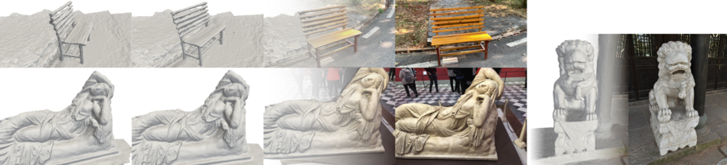
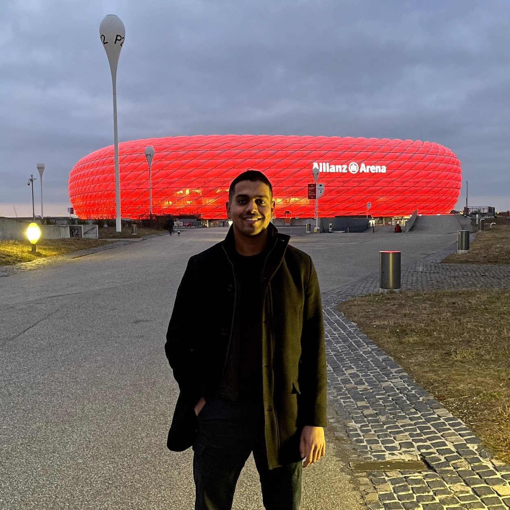
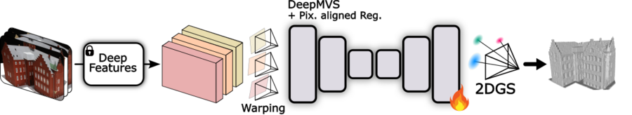
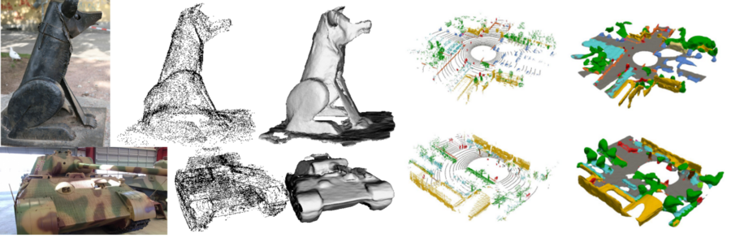
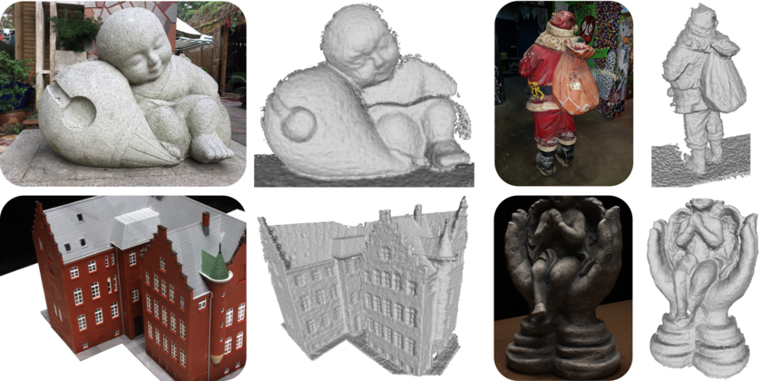
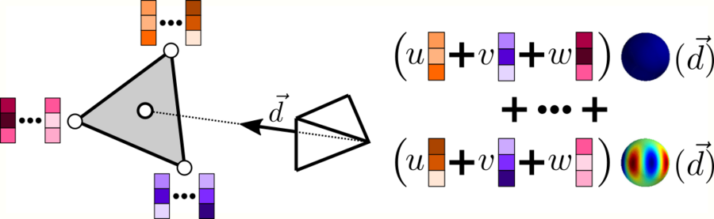
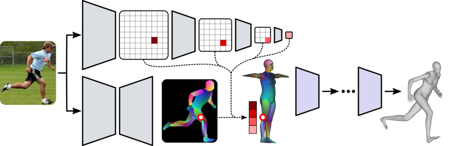

Shubhendu Jena
Research Engineer in 3D Computer Vision
Google Scholar GitHub LinkedIn
I am a Research Engineer at CEA List in Saclay, working on multi-camera 3D perception for autonomous driving. My current work focuses on joint 3D object detection and HD map prediction from surround-view cameras.
I received my PhD in Computer Science from Inria / Université de Rennes. My thesis, Combining Implicit and Explicit Representations for Modeling 3D Shape and Appearance, addressed 3D reconstruction and novel-view synthesis from sparse, unposed, or noisy inputs. I worked with occupancy and signed-distance fields, neural mesh rendering, and gaussian splatting, including feed-forward reconstruction from sparse views and joint optimization of scene geometry and camera poses.

Research interests
3D reconstruction from sparse views
Recovering scene geometry from a small number of images, including settings where camera poses are unknown.
Neural rendering
Implicit fields, neural mesh rendering, and gaussian splatting for 3D reconstruction and novel-view synthesis.
Camera-based BEV perception
Joint 3D object detection and HD map prediction from surround-view cameras.
News
- Sparfels, our method for fast 3D reconstruction from sparse images without known camera poses, was presented at ICCV 2025 and selected as a Highlight paper.
- I joined CEA List as a Research Engineer.
- Toward Robust Neural Reconstruction from Sparse Point Sets, which learns neural signed distance functions from sparse and noisy point clouds, was published at CVPR 2025.
- SparSplat, our feed-forward gaussian-splatting model for sparse-view reconstruction and novel-view synthesis, was presented at CV4Metaverse 2025, a CVPR 2025 workshop.
Publications
* denotes equal contribution.

SparSplat: Fast Multi-View Reconstruction with Generalizable 2D Gaussian Splatting
CV4Metaverse, CVPR Workshop 2025




Experience
Research Engineer
CEA List · Saclay, France
Multi-camera 3D perception, HD map prediction, and deployment for autonomous driving.
Research Engineer
Inria · Rennes, France
Graph-based human shape and pose estimation using pixel-aligned local image features.
Research Assistant
DFKI · Kaiserslautern, Germany
3D scene-flow prediction from LiDAR and RGB data.
Education
PhD in Computer Science
Inria / Université de Rennes, France
Combining Implicit and Explicit Representations for Modeling 3D Shape and Appearance.
MSc in Visual Computing
Saarland University, Germany
End-to-End 3D Scene Flow Prediction from LiDAR Point Clouds and RGB Data.
Dual Degree in Electrical Engineering
NIT Rourkela, India
Technical skills
- Programming
- Python, C++, Bash, SQL, R
- Machine learning
- PyTorch, TensorFlow, Hugging Face, OpenCV, MMDetection
- 3D vision
- Gaussian splatting, BEV perception, LiDAR-camera geometry, 3D reconstruction
- Systems
- CUDA, ONNX, TensorRT, Docker, SLURM, GitLab CI